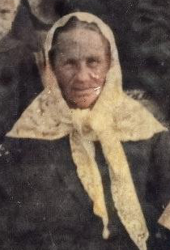

Madis
Maarja
Aleksandr
Aliide's parents Madis and Maarja and brother Aleksandr were targeted because they were successful farmers and as such damned as 'enemies of the people'. Alexandr extricated his family whilst Madis and Maarja were ordered to be deported to Kazahkstan with all property confiscated.
When agents came to the Markuse farm to take Madis and Maarja to Gatchina station for the journey to Siberia they failed to find them. Consequently, they missed the train. They had been 'working' in the forest at the time!
Local officers eventually carried out the deportation order sending the family to the town of Volosovo, Ingria. They were ordered not to leave the area. However, Volosovo was in the same region of Ingria and undaunted they made secret visits to family, including the Georgijevs.
Salme was able to recall her grandparents having two cats, Ruti and Ints, as well as a dog, Pontu. Being a child at the time she could not comprehend that they had to be abandoned.